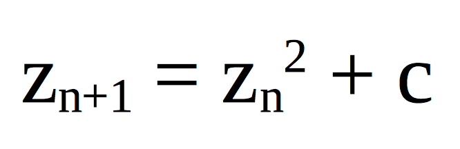

One way of defining the Mandelbrot set is by looking at how complex functions behave under repeated iteration. Here, “complex functions” are not necessarily terribly complicated; they’re functions that are defined on the complex numbers, numbers that have the form a+bi where a and b are garden-variety real numbers and i is √-1.
The functions in question have the form f(z)=z2+c, where c is a complex number. For each c, we seed the function by plugging in 0 as the initial value for z. Then we take whatever we get out and plug it back into the function. As we iterate the function, one of two things can happen: either the iterates get larger and larger in general, moving further and further away from 0, or they stay close, possibly bouncing around the area wildly but never getting very far from 0.
The values of c for which these iterates stay close to 0, colored black in the picture to the side, make up the Mandelbrot set. The other points are colored based on how quickly their iterates run away to infinity.
Aside from its inherent beauty, the Mandelbrot set has a few mathematically fascinating properties. Its complicated structure demonstrates what mathematicians mean by chaos: points very close to each other can have dramatically different behavior, and around the edges of the set, it’s basically impossible to predict whether a point is going to go one way or another. It also has surprising and interesting connections to other fractals called Julia sets.
Source
